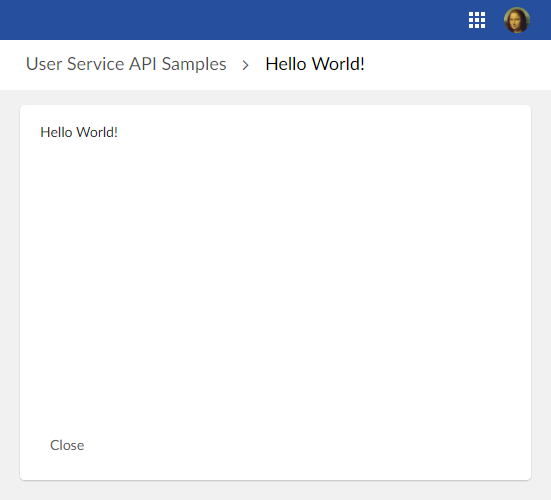

The minimum requirement is to implement two classes, one for the service declaration and one for the implementation itself.
The sample is a dataset user service that simply displays a "hello" message, it can be launched from the action menu of a dataset:

The service implementation class must implement the interface UserService<DatasetEntitySelection>:
/**
* This service displays hello world!
*/
public class HelloWordService implements UserService<DatasetEntitySelection>
{
public HelloWordService()
{
}
@Override
public void setupDisplay(
UserServiceSetupDisplayContext<DatasetEntitySelection> aContext,
UserServiceDisplayConfigurator aConfigurator)
{
// Set bottom bar
UIButtonSpecNavigation closeButton = aConfigurator.newCloseButton();
closeButton.setDefaultButton(true);
aConfigurator.setLeftButtons(closeButton);
// Set content callback
aConfigurator.setContent(this::writeHelloWorld);
}
private void writeHelloWorld(
UserServicePaneContext aPaneContext,
UserServicePaneWriter aWriter)
{
// Display Hello World!
aWriter.add("<div ");
aWriter.addSafeAttribute("class", UICSSClasses.CONTAINER_WITH_TEXT_PADDING);
aWriter.add(">");
aWriter.add("Hello World!");
aWriter.add("</div>");
}
@Override
public void setupObjectContext(
UserServiceSetupObjectContext<DatasetEntitySelection> aContext,
UserServiceObjectContextBuilder aBuilder)
{
// No context yet.
}
@Override
public void validate(UserServiceValidateContext<DatasetEntitySelection> aContext)
{
// No custom validation is necessary.
}
@Override
public UserServiceEventOutcome processEventOutcome(
UserServiceProcessEventOutcomeContext<DatasetEntitySelection> aContext,
UserServiceEventOutcome anEventOutcome)
{
// By default do not modify the outcome.
return anEventOutcome;
}
}
The declaration class must implement the interface UserServiceDeclaration.OnDataset:
/**
* Declaration for service hello world!
*/
public class HelloWorldServiceDeclaration implements UserServiceDeclaration.OnDataset
{
// The service key identifies the user service.
private static final ServiceKey serviceKey = ServiceKey.forName("HelloWorld");
public HelloWorldServiceDeclaration()
{
}
@Override
public ServiceKey getServiceKey()
{
return serviceKey;
}
@Override
public UserService<DatasetEntitySelection> createUserService()
{
// Creates an instance of the user service.
return new HelloWordService();
}
@Override
public void defineActivation(ActivationContextOnDataset aContext)
{
// The service is activated for all datasets instanciated with
// the associated data model (see next example).
}
@Override
public void defineProperties(UserServicePropertiesDefinitionContext aContext)
{
// This label is displayed in menus that can execute the user service.
aContext.setLabel("Hello World Service");
}
@Override
public void declareWebComponent(WebComponentDeclarationContext aContext)
{
}
}
In this sample, the user service is registered by a data model. The data model needs to define a schema extension that implements the following code:
public class CustomSchemaExtensions implements SchemaExtensions
{
@Override
public void defineExtensions(SchemaExtensionsContext aContext)
{
// Register the service.
aContext.registerUserService(new HelloWorldServiceDeclaration());
}
}
For details on the declaration of schema extensions, see SchemaExtensions.